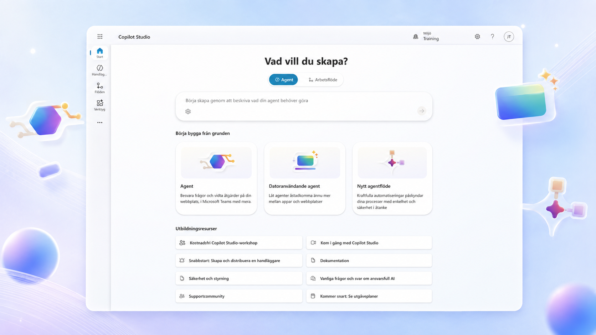
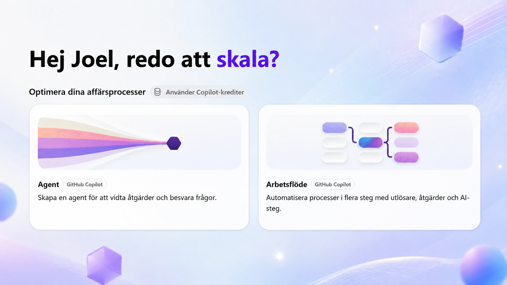

Lär dig Copilot Studio genom att bygga på riktigt.
Praktiska, scenariobaserade utbildningar för dig som vill förstå hur Microsofts agenter fungerar – och kunna omsätta kunskapen direkt i din egen organisation.
Välj den agentarkitektur du arbetar med
Börja med den etablerade standardagenten eller utforska den nya instruktionsdrivna upplevelsen. Kurserna har samma pedagogiska grund men olika byggsätt och scenario.

Bygg en standardagent
Skapa en IT-supportagent med SharePoint, kunskap, ämnen, adaptiva kort, flöden, autonomi och multi-agent-orkestrering.
Öppna utbildningen
Bygg en instruktionsdriven agent
Arbeta med modell, instruktioner, PDF-kunskap, aktuell SharePoint-data, skills och arbetsflöden i den nya agentupplevelsen.
Se kursuppläggetVilken av dem passar din uppgift?
De två upplevelserna är byggda för olika sorters arbete, och båda finns kvar parallellt – Microsoft anger att agenter byggda med standardharnessen fortsatt har fullt stöd vid sidan av agenter som drivs av GitHub Copilot-harnessen. Det handlar alltså om ett vägval, inte om en nyare version som ersätter en äldre. Sammanställningen nedan följer Microsofts egen dokumentation.
Välj standardagenten när…
…scenariot är väldefinierat och regelbaserat och du vill ha konsekventa, förutsägbara svar. Du definierar själv ämnen, prompter och vägar, så att upplevelsen svarar likadant varje gång, och den kan använda befintligt promptbibliotek och verksamhetskunskap.
Microsofts exempel: en intern helpdesk som svarar på vanliga frågor och skickar enklare ärenden vidare genom ett flöde.
Välj den instruktionsdrivna agenten när…
…agenten behöver resonera genom längre uppgifter, arbeta över flera verktyg, hantera filer eller automatisera en affärsprocess från början till slut. Den tar ett mål, bryter ner det i steg och justerar när ett steg misslyckas eller förutsättningarna ändras.
Microsofts exempel: en leverantörsreskontraprocess där agenten läser fakturor, matchar dem mot inköpsorder och skickar avvikelser vidare för godkännande.
| Egenskap | Standardagentstandard harness | Instruktionsdriven agentGitHub Copilot harness |
|---|---|---|
| Passar för | Regelbaserade agenter och strukturerade dialoger | Komplexa affärsprocesser i flera steg |
| Så arbetar den | Följer de ämnen och regler du definierar | Resonerar sig fram till målet på egen hand, steg för steg |
| När något går fel | Följer de vägar du har byggt | Försöker igen och hittar alternativa vägar automatiskt |
| Arbete med filer | Inte ett fokusområde | Skapar, redigerar och resonerar över Word, Excel, PowerPoint och PDF |
| Skills och minne | Inte ett fokusområde | Ingår |
| Publicering | Interna team eller externa kunder | Interna team eller externa kunder |
| Debitering | Enligt licensieringen för Copilot Studio | Copilot Credits, förbrukningsbaserat |
Valet görs när agenten skapas och går inte att ändra i efterhand – en agent kan inte flyttas mellan de två arkitekturerna. Utöver dessa finns en tredje variant, Copilot chat harness, för att utöka Microsoft 365 Copilot Chat med organisationens kunskap; den ingår inte i utbildningarna här. Källor: Välj en harness och Översikt över agenter på Microsoft Learn.
Från förklaring till fungerande agent
Förstå
Få den teori och kontext som krävs för att fatta rätt beslut.
Bygg
Följ en sammanhängande live-demo och bygg med i din egen miljö.
Testa
Se hur varje ny förmåga förändrar agentens svar och beteende.
Tillämpa
Ta med principerna tillbaka till den egna organisationens processer.